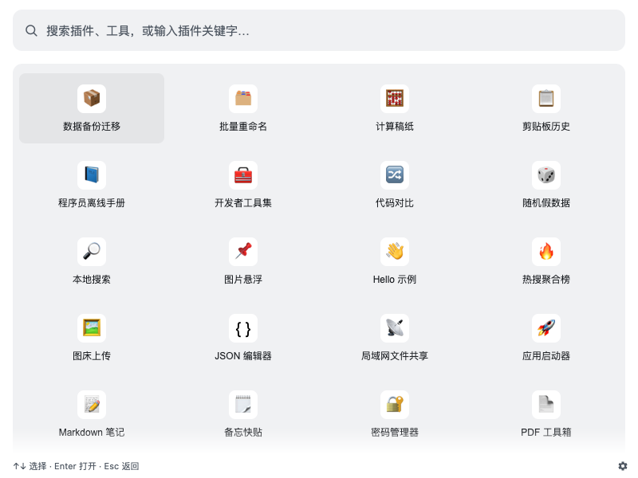
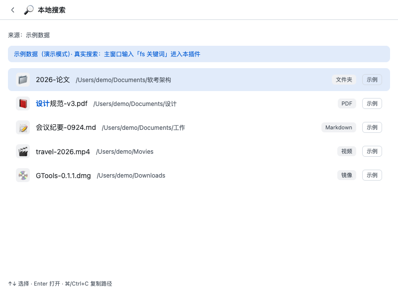
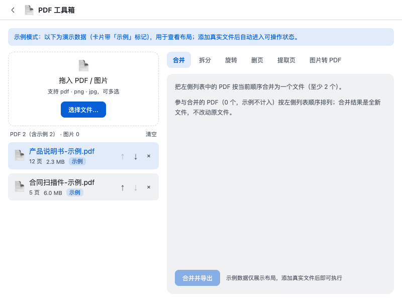
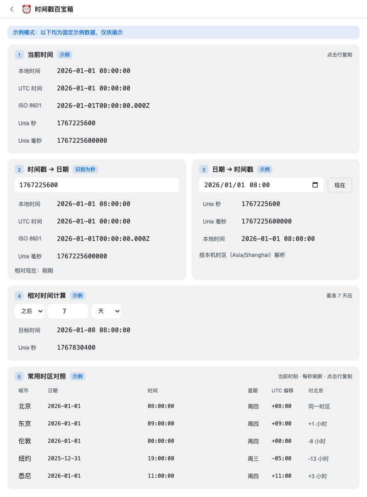
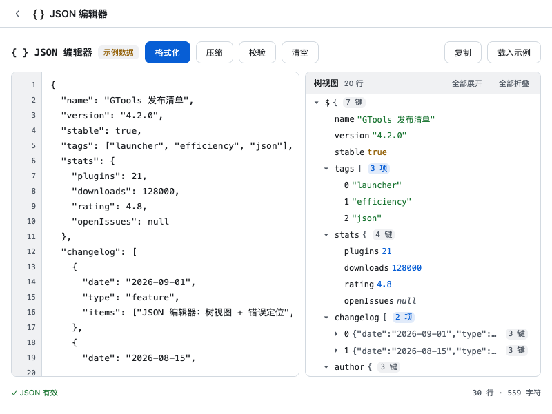

免费开源的 uTools 替代品 —— 全局快捷键唤起、输入即搜、按关键字路由进插件，效率工具一秒到手。
一个搜索框，装下你的全部日常工具。
macOS 默认 Alt+Space，Windows 默认 Ctrl+Alt+Space。无 Dock 常驻、托盘随行，任何界面下一敲即唤起，失焦自动隐藏。
支持中文、英文、全拼与首字母：敲 geshi 出「JSON 格式化」，敲 kfz 出「开发者工具集」，不用切输入法思维。
内置 24 个插件随应用打包；新增插件 = 新建 src/plugins/<id>/ 目录，glob 自动发现，宿主代码零改动。外部插件协议（协议 v1）已预留。
设置与插件数据存于系统 userData 目录，插件间 storage 物理隔离；preload 单通道安全桥，能力按 manifest 权限白名单校验，最小授权。
白色 / 黑色 / 玻璃三态切换 —— macOS vibrancy、Windows 亚克力，本页也会跟随你的系统深浅色。
免费开源，克隆仓库即可构建：npm run dist 出 macOS 安装包，npm run dist:win 自打 Windows 安装包。
空态不再是空白 —— 功能宫格 + 最近使用，不输入也能一屏直达。本版新增 5 款插件、重做升级 6 款。
唤起后未输入时，全部插件以四列图标宫格呈现于抬升面板：图标 + 名称，悬停显示简介，点击即进 —— 不记得关键字也能用。
宫格下方常驻「最近使用」行，记录你高频访问的插件与功能，回访常用工具一键直达，越用越顺手。
↑↓←→ 在宫格与最近使用间逐格移动，Enter 进入选中项；敲下第一个字符即切回搜索结果，两种形态无缝衔接。

计算稿纸（千分位 · Σ 合计）· 剪贴板历史（分类 · 固定置顶）· 聚合翻译（双栏 · 引擎切换）· Markdown 笔记（编辑/预览切换）· 待办 · 番茄钟 · 图片悬浮，详见下方插件卡片。
清单取自 src/plugins/*/manifest.ts，全部开箱即用；输入关键字 + 空格即进入插件上下文。新增 为 v0.2.0 新插件，0.2.0 重做 为本版重做升级。
按文件名搜本机文件：macOS 走 Spotlight（mdfind），类型徽标 + 回车打开 + ⌘C 复制路径；Windows 支持规划中
PDF 本地处理：合并、拆分、旋转、删页、提取页、图片转 PDF，全部本地完成不出网
极简备忘便签：顶部输入回车即存，单列便签流支持置顶 / 复制 / 删除，本地持久化
时间工具百宝箱：当前时间多格式、时间戳↔日期互转（秒/毫秒自动识别）、相对时间计算、常用时区对照
JSON 编辑器：左编辑右树视图，格式化/压缩/校验/复制，错误定位到行列，大 JSON 懒渲染
JSON / 时间戳 / UUID / Base64 / 正则 / 颜色 / JWT
Linux 命令 / Git / HTTP 状态码 / 正则语法 / VSCode 快捷键离线速查，支持拼音搜索与收藏
后台记录文本/图片剪贴板历史，分类浏览、搜索、固定置顶、一键复制
搜索并启动本机已安装应用
左右双栏聚合翻译：引擎切换（取设置 → API 服务 已启用引擎）· 交换语种 · 复制与发音，默认 MyMemory 免 Key
常用站点一敲即开：内置搜索/视频/开发/社交站点库，拼音全拼/首字母模糊匹配，支持自定义站点与「缩写 关键词」直达搜索
聚合微博/百度/知乎/B站/抖音/头条实时热搜，关注词过滤，新上榜标『新』，点击直达原文
行式计算稿纸：逐行实时结果（千分位）· 变量/ans/pi · 百分比/幂/括号/常用函数 · Σ 合计 · 本地保存与历史
速记型 Markdown 笔记本：列表管理 + 编辑/预览切换，本地持久化，导出 .md / 复制富文本
待办清单（优先级 · 今日/全部视图）＋ 番茄钟（25/5 可调 · 到点通知 · 今日统计 · 便签悬浮常驻）
贴图：把剪贴板 / 本地图片钉成置顶小窗，可拖动、滚轮缩放、调不透明度，位置与缩放会被记住
拖入 / 粘贴 / 选择图片上传图床（默认 sm.ms，兼容兰空 lsky 与自定义接口），成功即复制链接，Markdown/HTML/URL 三格式切换，本地保留上传历史
拖入/多选文件，规则链实时预览新旧名对照：查找替换(正则)、插入/删除、序号、大小写、扩展名，冲突标红，批量执行 + 撤销
左右两栏文本/代码对比：行级+词级高亮、同步滚动、增删改统计、忽略大小写/空白、结果可复制
输入中英文描述 → 按语言预设生成各上下文命名候选，一键复制；中译英经全局 API 中心，离线词典兜底
本地生成中文姓名/手机号/邮箱/身份证/地址/公司名/时间/金额等测试数据，支持字段组合模板
主密码 + PBKDF2/AES-GCM 本地加密保存账号，复制密码 30 秒自动清空剪贴板，附随机密码生成器
选文件夹在局域网起 HTTP 服务：手机扫码即可上传/下载/在线预览，多文件打包下载，实时连接设备与传输日志
导出全部数据为单个 .gtools 文件，跨 win/mac 迁移，导入前可预览差异
新增插件零改动公共代码的最小示例 —— 证明「新增插件 = 新建目录，宿主零改动」
截图取自应用实机界面（演示数据），全部本地运行、开箱即用。




通用 API 配一次、全局共用；插件专属 API 留在插件设置页自配 —— 什么进中心、什么留在插件，规则清晰。
能脱离具体插件描述成「服务品类」（翻译、LLM 补全、OCR…）、消费方 ≥2、配置属于 endpoint / 密钥 / 模板类技术凭证 —— 三项全满足的 API 进全局中心，在「设置 → API 服务」统一管理。翻译与变量命名插件共用同一份翻译服务配置，配一次两边生效：默认 MyMemory 免 Key，可添加自定义 HTTP 接口（DeepL / 百度 / 彩云等），多服务商启停切换、一键测试。
仅单一插件消费、难以品类化的配置（图床的仓库与域名规则、密码管理器主密码、局域网共享端口），以及语言方向、历史容量这类业务偏好，都留在插件自己的设置页 —— 偏好类配置永不上收。某专属 API 出现第二个消费方时，再按既定路径平滑上移全局中心。
API 请求由主进程统一代理执行，密钥只保存在本地主进程、永不下发渲染层，设置页也只见「密钥已保存」；插件须在 manifest 声明 apis:<service> 权限（如翻译的 apis:translate），经白名单校验后才能调用。API 服务配置随整机备份一起导出 / 导入。
唤起后输入即搜；输入插件关键字 + 空格进入插件上下文（如 dev 进开发者工具集）。
免费开源 —— 克隆仓库、两条命令跑起来；想要 Windows 安装包，自己打一个就行。
# 安装依赖（.npmrc 已配置 npmmirror 与 electron 镜像） npm install # 本地调试 / 构建 / 测试 / 类型检查 npm run dev npm run build # 编译主/预加载/渲染三段产物到 out/ npm test # vitest 单测（node 环境，纯逻辑） npm run typecheck # tsc + vue-tsc 类型检查 # 打安装包（release/） npm run dist # macOS 安装包（dmg） npm run dist:win # 自打 Windows 安装包（nsis，需在 Windows 环境实测）
export ELECTRON_BUILDER_BINARIES_MIRROR=https://npmmirror.com/mirrors/electron-builder-binaries/。
运行时依赖均为纯 JS 库（vue / pinyin-pro 等），无原生编译，clone 即可构建。